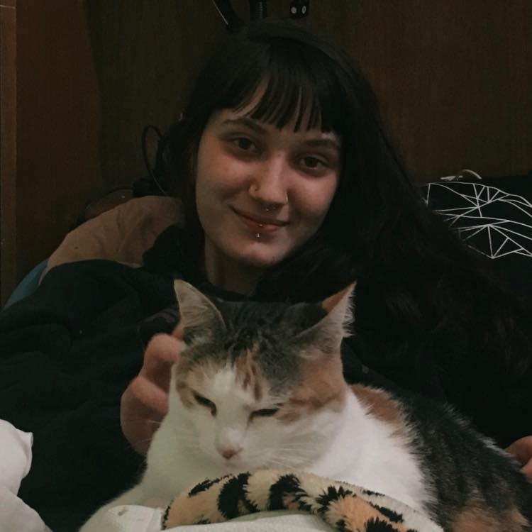

Acesse minhas redes sociais!


Oi, bem-vinde! Me chamo Ana Caroline, tenho 18 anos e sou programadora Java Junior.
Estou na faculdade de Segurança da Informação na FATEC e faço bootcamp na Generation Brasil durante o dia. Além da programação, também sou apaixonada por arte, música e muita cultura!

A música tem uma grande importância na minha vida desde muito nova, ela me acalma em momentos turbulentos e me da inspiração nos momentos em que mais preciso. Gostaria de compartilhar com vocês uma música que poucos conhecem, mas que gosto muito: